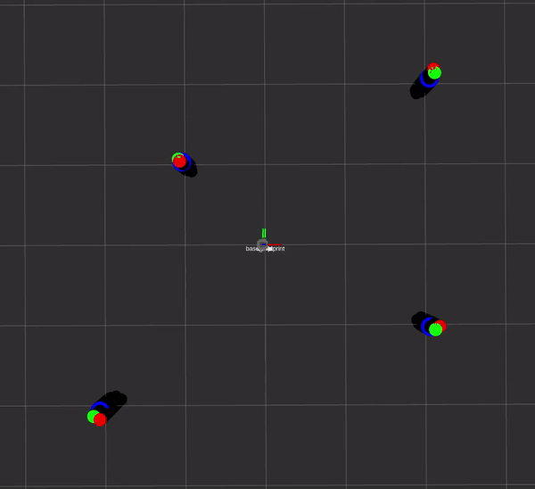
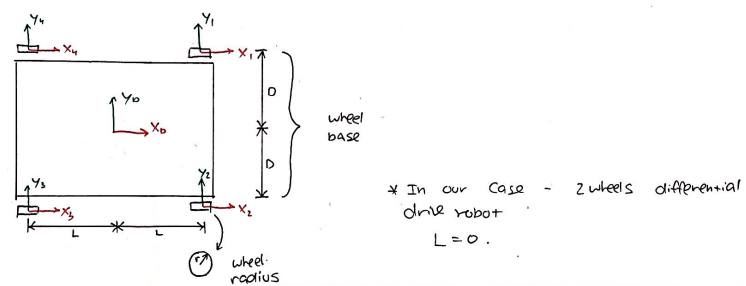

Feature-Based EKF-SLAM from Scratch
ROS | C++ | Differential Drive Kinematics | EKF-SLAM | Data Association | Unsupervised Learning
January 2021 - March 2021
Description
In This project, I performed a landmark-based Extended Kalman Filtered (EKF) SLAM on Turtlebot3.
I used unsupervised learning with known and unknown data association for simultaneous localization and mapping of the environment.
I implemented the project from scratch using ROS in C++.
Take a look at the project on my GitHub page.

Demo of the EKF-SLAM algorithm in action
Overview
Packages
The project contains 6 core ROS packages:
- nuturtle_descritopn - A package that adapts the URDF model of turtlebot3_burger, a differential drive robot, for rviz visualization.
- rigid2d - A 2D Lie Group library used for transformation, vectors and twist operations in 2D for differential drive robots.
- trect - A package for waypoints following feedback control.
- nuturtle_robot - A package for Turtlebot3 hardware interface, including setting motor control and getting Lidar readings.
- nuturtlesim - A package that simulates the kinematics of the diff-drive turtlebot.
- nuslam - A package contains the implementations of the feature detection algorithm and the feature-based Kalman Filter SLAM.
Main Algorithms
Rigid2d and Diff-Drive Kinematics
The library rigid2d performs two-dimensional rigid body transformations, and the library diff_drive performs the kinematics of a differential drive robot. The latter's main porpuse is to convert wheel velocity to body twist and vice versa, and derive the odometry.
Twist to wheel velocity
Acording to [2], we can write the twist of each wheel as: $$ V_i = A_{ib}\cdot V_b $$ Where $$ V = \begin{bmatrix} \dot\theta \\ V_x \\ V_y \end{bmatrix} $$ and $$ A_{ib} = \begin{bmatrix} 1 && 0 && 0 \\ Base && 1 && 0 \\ 0 && 0 && 1 \end{bmatrix} $$ $ Base = D $ for wheel 1, and $ Base = -D $ for wheel 2.

Robot sketch
In conventional wheel we assume no slipping and no sliding ($V_y = 0$). Therefore: $$ \begin{bmatrix} \dot\theta \\ V_{xi} \\ V_{yi} \end{bmatrix} = \begin{bmatrix} 1 && 0 && 0 \\ Base && 1 && 0 \\ 0 && 0 && 1 \end{bmatrix} \begin{bmatrix} \dot\theta \\ r\dot\phi_i \\ 0 \end{bmatrix} $$ Where $ \dot\phi_i $ is the rotational velocity of wheel $i$ and $r$ is the wheel radius.
Now, by extracting $ \dot\phi_i $, we can find the connection between wheel velocity and twist: $$ \underbrace{ \begin{bmatrix} \dot\phi_1 \\ \dot\phi_2 \end{bmatrix}}_u = \frac{1}{r} \underbrace{ \begin{bmatrix} -D && 1 && 0 \\ +D && 1 && 0 \end{bmatrix}}_H \underbrace{ \begin{bmatrix} \dot\theta \\ V_x \\ V_y \end{bmatrix}}_{V_b} $$
Wheel velocity to twist
From [2], we can find the control to twist relationship by solving $ u = HV_b $ for $ V_b $ as: $$ V_b = H^\dagger u $$ Where $ H^\dagger = H^T(HH^T)^{-1} $ is the Moore-Penrose Pseudoinverse.
From here we can get: $$ H^\dagger = \begin{bmatrix} -\frac1{2D} && \frac1{2D} \\ \frac12 && \frac12 \\ 0 && 0 \end{bmatrix} $$ and therefore: $$ V_b = r \begin{bmatrix} -\frac1{2D} && \frac1{2D} \\ \frac12 && \frac12 \\ 0 && 0 \end{bmatrix} \begin{bmatrix} \dot\phi_1 \\ \dot\phi_2 \end{bmatrix} $$
The following video demonstrate the turtlebot3 moving in circular path using those libraries:

Demo of the turtlebot3 moving in circular path using rigid2d and diff_drive libraries
For further Rigid Body Transformations and Wheeled Mobile Robots Kinematics notation details, please refer to ME495 course notes about Rigid2d and Diff-Drive Kinematics.
Feature Detection using supervised and unsupervised learning
Before performing SLAM, we need to detect landmarks that can be used as sensor measurements. For landmark detection, we need to solve 3 problems:
- First we need to solve an unsupervised learning problem - clustering points into groups corresponding to individual landmarks. The laser scanner points clustering is based on a distance threshold, and any cluster contained less than 3 points is discarded.
- Next, we need to solve a supervised learning problem - circular regression. The circular regression problem can be solved using circle fitting algorithm [3]. For further Circle Fitting notation details, please refer to this webpage.
- Finally, we need to solve a classification problem - classify the clusters of points into circle and non-circle to avoid false detections. This problem can be solved by arc/circle detection algorithm [4].
EKF SLAM with Known Data Association
In the EKF-SLAM algorithm, I used the following notations:
The state of the robot at time $t$ is: $$ q_t = \begin{bmatrix} \theta_t \\ x_t \\ y_t \end{bmatrix} \in \Bbb{R}^3 $$
The state of the map is: $$ m_t = \begin{bmatrix} m_{x_1} \\ m_{y_1} \\ \vdots \\ m_{x_n} \\ m_{y_n} \end{bmatrix} \in \Bbb{R}^{2n} $$
The combined state vector is: $$ \xi_t = \begin{bmatrix} q_t \\ m_t \end{bmatrix} \in \Bbb{R}^{2n+3} $$
The odometry model governs how the robot’s state transitions from time $t-1$ to time $t$, given the twist: $$ u_t = \begin{bmatrix} \Delta{\theta_t} \\ \Delta{x_t} \\ 0 \end{bmatrix} \in \Bbb{R}^3 $$
The range measurement $r_j$, is the distance to landmark $j$. The bearing measurement $\phi_j$, is the relative bearing of landmark $j$.
The measurement model relates the system states to the measurements. The measurement for range and bearing to landmark $j$ is: $$ z_j(t) = h_j(\xi_t) + v_t $$ where $$ h_j(\xi_t) = \begin{bmatrix} r_j \\ \phi_j \end{bmatrix} $$ and $v_t \sim N(0, R)$.
At each timestep $t$, Extended Kalman filter SLAM takes odometry $u_t$ and sensor measurements $z_i$ and generates an estimate of the full state vector $\hat\xi_t$ and the covariance $\Sigma_t$.
The EKF-SLAM algorithm consists of two steps:
- Measurement Estimation Prediction
- Measurement Estimation Update
Measurement Estimation Prediction
First, we updated the state estimate given a twist using: $$ \hat \xi_t^- = g(\hat \xi_{t-1}, u_t, \epsilon) $$ Where $\hat \xi_t^-$ is the estimated state vector, and $\epsilon$ is motion noise.
Next, we propagated the uncertainty using the linearized state transition model: $$ \hat \Sigma_t^- = g'(\hat \xi_{t-1}, u_t, \epsilon) \hat \Sigma_{t-1}g'(\hat \xi_{t-1}, u_t, \epsilon)^T + \bar Q $$
where $$ \bar Q = \begin{bmatrix} Q && 0_{3X2n} \\ 0_{2nX3} && 0_{2nX2n} \end{bmatrix} $$ is the process noise for the robot motion model.
Measurement Estimation Update - Data Association
There are practical steps that must occur prior to incorporating the measurements:
- Data association: Each incoming measurement must be associated with an existing landmark state.
- Landmark Initialization: when a new landmark is encountered it must be added to the state vector and initialized.
For each landmark $j$ associated with measurement $i$:
First, compute the Kalman gain from the linearized measurement model: $$ K_i = \hat \Sigma_t^-h'_j(\xi_t)^T(h'_j(\xi_t)\Sigma_t^-h'_j(\xi_t)^T + R)^{-1} $$ where R is a diagonal measurement noise matrix.
Then, compute the posterior state update: $$ \hat\xi_t = \hat\xi_t^- + K(z_t^i - \hat z_t^i) $$ where $\hat z_t^i = h_j(\hat \xi_t^-)$ is the theoretical measurement and $z_t^i$ is the actual measurement.
Finally, compute the posterior covariance: $$ \Sigma_t = (I-K_iH_i)\Sigma_t^- $$
To incorporate the next measurement $(i + 1)$, use the updated state $\xi_t$ and covariance $\Sigma_t$ for $\xi_t^-$ and $\Sigma_t^-$.
For further EKF SLAM notation details, please refer to this webpage.
For further Data Association notation details, please refer to this webpage.
References
[1] ME495 - Sensing, Navigation, and Machine Learning for Robotics course notes by Professor Matthew Elwin, Northwestern University (2021)
[2] K. Lynch and F. Park, Modern Robotics: Mechanics, Planning, and Control, Cambridge University Press (2017)
[3] A. Al-Sharadqah and N. Chernov, Error Analysis for Circle Fitting Algorithms, Electronic Journal of Statistics (2009)
[4] J. Xavier et al., Fast line, arc/circle and leg detection from laser scan data in a Player driver, ICRA (2005)